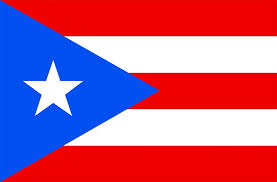

About Me:
I was born in Puerto Rico but I was raised in Texas and have lived here for almost 16 years. Starting off in 2020 as a freshman at the University of Texas at Tyler, I eventually transferred to Texas A&M University where I am currently set to graduate in May 2025. The journey to get this far has been full of its ups and downs but I know this hard work will pay off.
Going into college, I knew next to nothing about programming outside of a brief time spent learning HTML and CSS in high school. Despite this, I was determined to learn and spent hours both inside and out of class trying to expand my skillset. Before I knew it, I had gotten a few projects under my belt and was much more confident in my coding abilities. Though I am most comfortable with frontend development, I also want to become more familiar with full stack development.
My Goals:
After I graduate, I intend to work as a software developer where I will continue honing my skills as a programmer. While I am quite partial to web and app development, I am very much open to pursuing any path where I can put my skills to use. However, regardless of where I choose to go, I will always aim to excel at what I do and work to create something that I can be proud of.
Why Hire Me?
I believe that one of my better qualities is my ability to adapt to different environments. I can be an excellent team player with the drive to go above and beyond in everything I do. On top of that, I am more than willing to learn on the job. Being able to further expand my skillset and grow as a developer would make me an asset to any team.